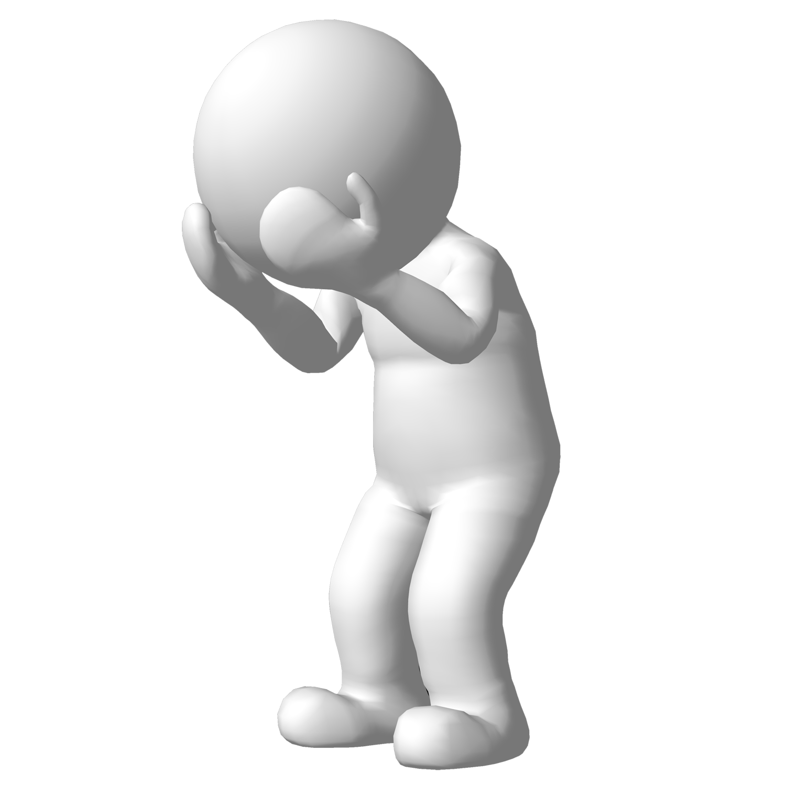

FACTORES DE LA VIOLENCIA INTRAFAMILIAR
EFECTOS DE LA VIOLENCIA INTRAFAMILIAR
| FASE 1. ACUMULACIÓN DE TENSION | FASE 2. EPISODIO AGUDO DE VIOLENCIA | FASE 3. ETAPA DE CALMA, ARREPENTIMIENTO |
|---|---|---|
| A medida que la relación continúa, se incrementa la demanda así como el stress. Hay un incremento del comportamiento agresivo, más habitualmente hacia objetos que hacia la pareja. Por ejemplo, dar portazos, arrojar objetos, romper cosas. El comportamiento violento es reforzado por el alivio de la tensión luego de la violencia. La violencia se mueve desde las cosas hacia la pareja y puede haber un aumento del abuso verbal y del abuso físico. | Aparece la necesidad de descargar las tensiones acumuladas El abusador hace una elección acerca de su violencia. Decide tiempo y lugar para el episodio, hace una elección consciente sobre qué parte del cuerpo golpear y cómo lo va a hacer. | Se caracteriza por un período de calma, no violento y de muestras de amor y cariño. En esta fase, puede suceder que el golpeador tome a su cargo una parte de la responsabilidad por el episodio agudo, dándole a la pareja la esperanza de algún cambio en la situación a futuro. Actúan como si nada hubiera sucedido, prometen buscar ayuda, prometen no volver a hacerlo, etc. |
| La pareja intenta modificar su comportamiento a fin de evitar la violencia. Por ejemplo: mantener la casa cada vez más limpia, a los hijos más silenciosos, etc. El abuso físico y verbal continúa. La mujer comienza a sentirse responsable por el abuso. El violento se pone obsesivamente celoso y trata de controlar todo lo que puede: el tiempo y comportamiento de la mujer (cómo se viste, adónde va, con quién está, etc.) El violento trata de aislar a la víctima de su familia y amistades. Puede decirle, por ejemplo, que si se aman no necesitan a nadie más, o que los de afuera son de palo, o que le llenan la cabeza, o que están locos etc. | Como resultado del episodio la tensión y el stress desaparecen en el abusador. Si hay intervención policial él se muestra calmo y relajado, en tanto que la mujer aparece confundida e histérica debido a la violencia padecida. | Si no hay intervención y la relación continúa, hay una gran posibilidad de que la violencia haga una escalada y su severidad aumente. A menos que el golpeador reciba ayuda para aprender métodos apropiados para manejar su stress, esta etapa sólo durará un tiempo y se volverá a comenzar el ciclo, que se retroalimenta a sí mismo. Luego de un tiempo se vuelva a la primera fase y todo comienza otra vez. |